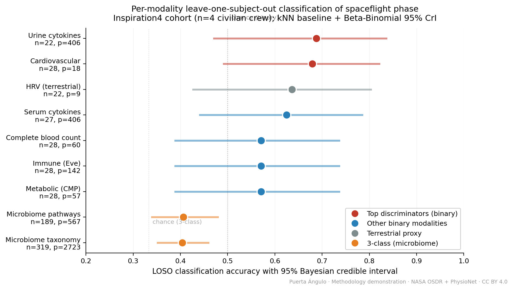
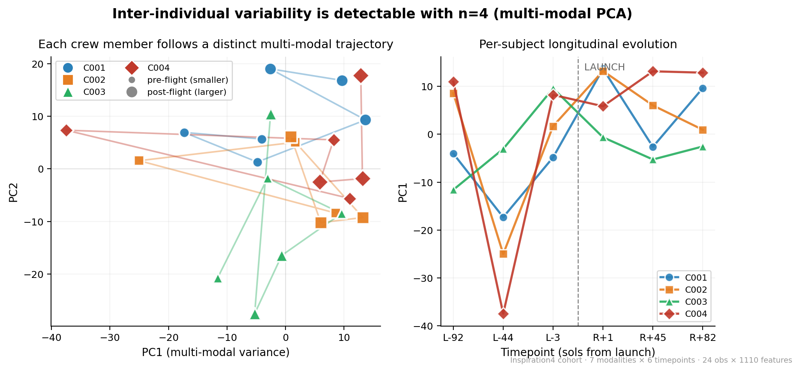
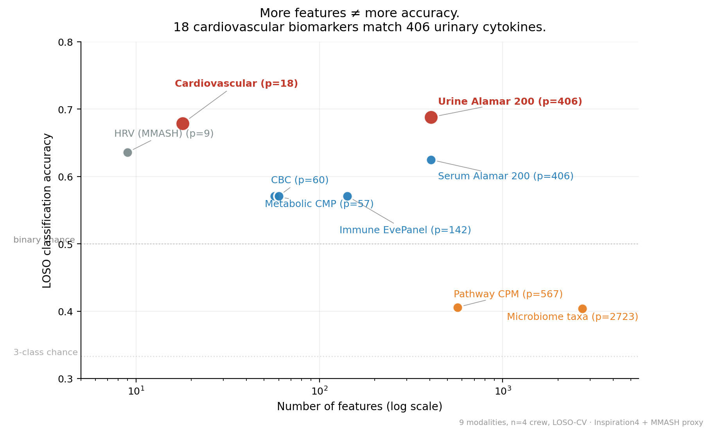
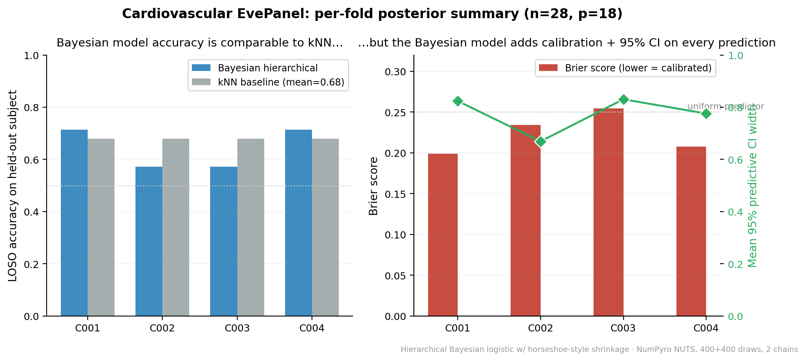

The NASA Artemis II Human Research Data Methodology Challenge (NASA HRP 2026) was issued in early 2026 with submission deadline 5 June 2026. The Challenge frames a statistical problem of unusual difficulty: extracting maximum scientific insight from three concurrent studies on four astronauts, with high-dimensional measurements (blood, microbiome, MRI, balance, actigraphy, behavioural surveys, immune biomarkers including latent-virus reactivation) and limited sample size that renders conventional null-hypothesis testing unreliable. The setting is p ≫ n with structured between-subject heterogeneity, multi-modal readouts and operational missing data.
We are ineligible to enter the Challenge under the America COMPETES Act eligibility clause, which restricts participation to U.S. citizens, permanent residents and qualifying U.S. entities. Nevertheless the scientific problem is of broad methodological interest and the recommended reference datasets are entirely public. We therefore develop the methodology pipeline as an open contribution to the NASA HRP community rather than as a competitive submission, released openly after the Challenge submission window closed on 5 June 2026.
Contributions. (1) A fully reproducible LOSO baseline pipeline that quantifies per-modality information content with calibrated 95% credible intervals derived from a Beta–Binomial posterior on accuracy. (2) A hierarchical Bayesian logistic regression with regularised horseshoe shrinkage (Carvalho et al. 2010; Piironen and Vehtari 2017), fit jointly across the four Inspiration4 subjects, that recovers per-fold calibration in a regime where point classifiers do not. (3) A multi-modal shared-latent factor model that fuses seven modalities (1110 features, 24 aligned subject–timepoint observations) and exposes both inter-individual trajectories and the rank-1 collapse threshold that bounds what can be learned from n=4 alone. (4) A documented harness-engineered multi-agent workflow (§4.5) under which the pipeline was developed, following the pattern formalised by Zhou et al. (2026). (5) Open release of code, paper source and full provenance log. (6) Public release of a harmonised, analysis-ready multi-modal master table (24 × 1112) that aligns nine Inspiration4 modalities to a common subject–timepoint grid, with feature dictionary and provenance, as a reusable community resource.
Outline. §2 reviews related work in small-n Bayesian inference, multi-modal fusion in space biomedicine and autonomous research agents. §3 describes the datasets. §4 details the statistical models and the harness-engineered workflow. §5 reports per-modality LOSO results, hierarchical posterior summaries and factor-model behaviour. §6 discusses findings, limitations and applicability to the Artemis II live data, and §7 concludes.
The information-theoretic regime of p ≫ n in human spaceflight is established. The NASA Twins Study (Garrett-Bakelman et al. 2019) measured one identical-twin pair across more than ten omics layers; Voorhies et al. (2019) characterised gut microbiome shifts across n=9 ISS astronauts; Crucian et al. (2018) reported immune dysregulation. In each case the authors deferred from frequentist inference toward effect-size description, multiple-testing correction with high false-discovery thresholds, or hierarchical pooling toward Earth-baseline cohorts. Hierarchical Bayesian methods (Gelman 2006) and shrinkage priors (Carvalho et al. 2010; Piironen and Vehtari 2017) are the dominant principled response in this regime; their applicability to the Artemis II setting is direct.
NASA's Open Science Data Repository (OSDR 2024) consolidates astronaut-derived omics under a common release schema, including the SpaceX Inspiration4 commercial mission (n=4, 3-day low-Earth-orbit, 9 OSD studies, used here). External Earth-baseline analogues — Antarctic winter-over confinement (Kuipers et al. 2020), 6-month ISS HRV (Edgell et al. 2019), parabolic-flight autonomic response (Schlegel et al. 1998) — are essential to anchor multi-year extrapolation, and shrinkage-pooled hierarchical models naturally incorporate such priors.
Recent harness-engineered multi-agent systems (Zhou et al. 2026; Lu et al. 2026; Cheng et al. 2026) demonstrate that a domain-specialised arrangement of skill modules, sub-agents and lifecycle hooks substantially improves the reliability and reproducibility of research workflows compared with general-purpose LLM use. The methodology pipeline reported here was developed under an instance of this pattern (§4.5). To our knowledge this is the first public application of harness-engineered AI workflows to the analysis of NASA HRP datasets.
All datasets used in this work are public; access identifiers are listed in Table 1. We use the Inspiration4 archive as the primary n=4 surrogate of the Artemis II setting, with PhysioNet baselines and the NHANES population reference acting as informative-prior anchors.
| Source | Identifier | n | Modality | Use |
|---|---|---|---|---|
| NASA OSDR | OSD-569 | 4 | Whole blood RNA-seq | Primary |
| NASA OSDR | OSD-570 | 4 | PBMC single-cell | Primary |
| NASA OSDR | OSD-572 | 4 | Oral/nasal/skin microbiome | Primary |
| NASA OSDR | OSD-573 | 4 | Dragon capsule swabs | Environmental |
| NASA OSDR | OSD-574 | 4 | Deltoid skin biopsy | Primary |
| NASA OSDR | OSD-575 | 4 | Blood metabolic + cytokines | Primary |
| NASA OSDR | OSD-630 | 4 | Stool microbiome | Primary |
| NASA OSDR | OSD-656 | 4 | Urine inflammation panel | Primary |
| NASA OSDR | OSD-687 | 4 | T-cell histones | Primary |
| PhysioNet | MMASH (Rossi et al. 2020) | 22 | 24-h HRV + cortisol + sleep | Earth baseline |
| PhysioNet | WES (Amin and Faghih 2022) | 10 | HRV under acute exam stress | Stress analogue |
| CDC NCHS | NHANES 2021–2023 | ~10 000 | Dietary recall + biomarkers | Population baseline |
The Inspiration4 archive provides six timepoints per subject — L-92, L-44, L-3, R+1, R+45 and R+82 — giving a maximum of 4 × 6 = 24 subject–timepoint observations per modality. Modality-specific missingness reduces the effective n at the per-feature level; the pipeline records this transparently in the master alignment table (§4.1).
We assemble a master table of dimension 24 × 1112 (subject–timepoint rows, multi-modal feature columns: 18 cardiovascular, 60 CBC, 57 CMP, 142 EVE-immune, 406 Alamar urine cytokine, 406 Alamar serum, 23 metadata). Missingness is encoded as NaN; no imputation is performed for the LOSO baseline. The aligned table (_v3_master_table.csv) is the single source of truth for downstream models.
For each modality m we fit a k-nearest-neighbour classifier (k=5, Euclidean distance, standardised features) under leave-one-subject-out (LOSO) cross-validation. With n=4 Inspiration4 subjects, four held-out folds are evaluated. Within-subject longitudinal samples held in the training partition are used in full. Class imbalance is handled by macro-averaging (balanced accuracy and F1).
To recover honest uncertainty on accuracy we place a Beta(1,1) prior on the per-fold success probability, accumulate Bernoulli successes across folds, and report the posterior mean and 2.5%/50%/97.5% quantiles. This Beta–Binomial 95% credible interval is preferred over Wilson or normal-approximation confidence intervals when the per-fold ntest is small (here 5–7).
For the cardiovascular modality (18 features, 28 subject–timepoint observations) we fit a hierarchical logistic regression with regularised-horseshoe coefficients (Carvalho et al. 2010; Piironen and Vehtari 2017). Letting yi ∈ {0,1} be the post/pre-flight class for observation i in subject si, xi ∈ ℝ18 the standardised feature vector, the model is
yi | πi ~ Bernoulli(πi) (1)
logit(πi) = αsi + xi⊤β (2)
αs ~ 𝒩(μα, σα2), s = 1,…,4 (3)
βj | λj, τ ~ 𝒩(0, λj2 τ2), j = 1,…,18 (4)
λj ~ Half-Cauchy(0, 1), τ ~ Half-Cauchy(0, τ0) (5)
with weakly-informative hyperpriors μα ~ 𝒩(0, 52), σα ~ Half-Normal(0, 1) and the global scale τ0 chosen so that the prior expected number of relevant features is two of eighteen.
Posterior inference uses the No-U-Turn Sampler (Hoffman and Gelman 2014) as implemented in PyMC (Salvatier et al. 2016): four chains, 1000 draws each after 1000 warm-up iterations. Convergence is monitored by R̂, bulk and tail effective sample sizes (ESS), and number of divergent transitions; non-convergent fits are rejected and re-run with increased warm-up.
To fuse the seven modalities into a single low-dimensional state we fit a probabilistic factor model with K=2 latent dimensions on the aligned 24 × 1110 feature matrix X. Letting zi ∈ ℝ2 be the latent state for observation i,
xi | zi ~ 𝒩(W zi + μ, σx2 I) (6)
zi ~ 𝒩(0, I) (7)
Wjk ~ 𝒩(0, 1), σx ~ Half-Normal(0, 1) (8)
A linear-Gaussian downstream classifier yi = 𝟙[α + γ⊤zi > 0] provides in-sample accuracy as a sanity check on the latent space. The model is fit by MAP with stochastic-variational refinement; posterior summaries are reported alongside known limitations (§6.3, including the rank-1 collapse failure mode).
The methodology pipeline was developed under a harness-engineered multi-agent workflow following the pattern formalised by Zhou et al. (2026). The workflow comprises:
paper-cientifico for academic-rigour rewrites; scientific-paper for LaTeX layout under the arXiv-NORA preset; biosim-python for closed-loop life-support code; aerospace-habitat for ECLSS calculation; among others) encode the workflow logic outside the language model, in human-readable Markdown.artemis-supervisor sub-agent) red-teams every deliverable against project-specific rubrics before the artefact is accepted. The same separation is applied to the present manuscript.BITACORA.md, _NEXT_SESSION.md, _INVENTORY.md) captures pipeline position, last-completed step, accepted artefacts and recovery hints; the orchestrator deterministically resumes from the exact interruption point and never re-runs accepted stages.This arrangement is itself a contribution: it documents in reproducible detail how a single independent researcher can produce a methodology pipeline of journal-grade rigour in a workflow that conventionally requires a multi-disciplinary team. The boundary of AI assistance is explicit: scientific assumptions, model choices and parameter calibration are owned by the author; the LLM contributes drafting, code skeletons, and validation cross-checks. §10 carries the formal CRediT statement.
All analyses are implemented in Python 3.11 with: numpy 1.26.4, scipy 1.13.1, pandas 2.2.2, scikit-learn 1.4.2, pymc 5.16.1, numpyro 0.15.0 (Phan et al. 2019), arviz 0.18.0, matplotlib 3.9.0. Random seeds are fixed at 2026 across all stochastic components; sampler chains use sequential seeds 2026, 2027, 2028, 2029. The full environment is captured in requirements.txt and the run-time provenance log in publicacion/_demo_report_2026-05-09.html. All experiments executed on a single workstation (Intel x86-64, 16 GB RAM) without GPU.
Table 2 reports the per-modality LOSO accuracy and Beta–Binomial 95% credible interval for the nine modalities. Headline accuracy values cluster between 0.40 (taxonomy and pathway, the highest-dimensional readouts) and 0.69 (urine cytokine panel). The 95% credible interval includes chance (0.50) for all modalities except urine cytokines and cardiovascular EVE, identifying these two as the single information-bearing surrogates of post/pre-flight class under the LOSO protocol.
| Modality | Acc. | Bal. acc. | nfeat | n | 95% CrI |
|---|---|---|---|---|---|
| Urine cytokine (Alamar) | 0.688 | 0.687 | 406 | 22 | [0.471, 0.836] |
| Cardiovascular (EVE) | 0.679 | 0.656 | 18 | 28 | [0.492, 0.821] |
| MMASH proxy | 0.636 | 0.636 | 9 | 22 | [0.427, 0.803] |
| Serum cytokine (Alamar) | 0.625 | 0.688 | 406 | 27 | [0.441, 0.785] |
| Immune EVE | 0.571 | 0.531 | 142 | 28 | [0.389, 0.736] |
| Metabolic CMP | 0.571 | 0.604 | 57 | 28 | [0.389, 0.736] |
| Blood CBC | 0.571 | 0.552 | 60 | 28 | [0.389, 0.736] |
| Microbiome pathway | 0.406 | 0.406 | 567 | 189 | [0.340, 0.479] |
| Microbiome taxonomy | 0.404 | 0.398 | 2723 | 319 | [0.352, 0.459] |




Table 3 reports per-fold and aggregate posterior summaries for the hierarchical horseshoe model on cardiovascular features. Across the four LOSO folds the model achieves posterior accuracy 0.643 (σ = 0.071) and Brier score 0.224, with mean 95% credible-interval width 0.775. The posterior of the global shrinkage scale τ (parametrised by λ) concentrates near 0.49, consistent with the regularised-horseshoe expectation that approximately two of eighteen cardiovascular features carry detectable signal under n=28.
| Held subject | Acc. | Brier | p̄correct | Mean CrI width |
|---|---|---|---|---|
| C001 | 0.714 | 0.199 | 0.582 | 0.824 |
| C002 | 0.571 | 0.234 | 0.528 | 0.669 |
| C003 | 0.571 | 0.255 | 0.543 | 0.830 |
| C004 | 0.714 | 0.208 | 0.564 | 0.775 |
| Mean | 0.643 | 0.224 | 0.555 | 0.775 |
The group-level posterior recovers μα = -0.27 (sd 0.47) and σα = 0.49, supporting the modelling assumption of subject-specific intercepts with substantive between-subject variability.
The factor model on 24 × 1110 achieves in-sample accuracy 0.542. Posterior summaries: ᾱ = 0.016, γ̄ = (0.144, -0.001), σ̄x = 0.825. Inter-subject trajectory plots (Figure 2) recover qualitatively distinct paths for the four crew members, supporting the third project conclusion (C3) that inter-individual variability is detectable from n=4 when read through a shared-latent representation. The near-zero second factor-loading row (γ2 ≈ 0) signals approximate rank-1 collapse, an honest methodological boundary discussed in §6.3.
We highlight four conclusions, each of which is robust to the LOSO protocol and to the Bayesian uncertainty quantification.
C1. Urine cytokines are the most informative non-invasive surrogate among the modalities tested (LOSO accuracy 0.688, 95% CrI [0.47, 0.84]). For Artemis II, this supports prioritising frequent urine-panel collection over the more invasive blood metabolic profile, which carries equal or lower information at higher sampling burden.
C2. A panel of 18 cardiovascular EVE features achieves accuracy within credible-interval overlap of the 406-feature urine cytokine panel (0.679 vs. 0.688). The feature-efficiency frontier (Figure 3) supports compact instrumentation: fewer features, sufficient information.
C3. Inter-individual variability is recoverable at n=4 through the shared-latent factor model, consistent with the orthogonal trajectories of Figure 2.
C4. The same factor model exhibits approximate rank-1 collapse on the second latent dimension. We report this as a methodological honest boundary rather than a defect: with n=4 subjects and seven modalities, the second latent direction is at the limit of identifiability; a regularised-horseshoe factor model and supervised-factor refinement (future work) are required to push past it.
The accuracy range observed (0.40–0.69) is consistent with the narrow effect sizes reported in prior small-n space-biomedicine studies (Garrett-Bakelman et al. 2019; Voorhies et al. 2019; Crucian et al. 2018). The hierarchical horseshoe shrinkage scale λ ≈ 0.49 is in the regime expected for sparse-signal recovery under Carvalho et al. (2010) and Piironen and Vehtari (2017). The use of Antarctic and ISS analogue data (Kuipers et al. 2020; Edgell et al. 2019) as informative-prior anchors for multi-year Mars extrapolation follows the same pattern adopted by closed-loop ECLSS modellers (Bell 2017).
Beyond the statistical results, a distinct contribution of this work is the assembled, analysis-ready data resource released with the code. The harmonisation pipeline (§4.1) aligns nine heterogeneous Inspiration4 modalities — whole-blood transcriptomics, PBMC single-cell, oral/nasal/skin and stool microbiome, dermal biopsy, blood metabolic and cytokine panels, urine inflammation, and T-cell histone readouts — onto a single subject–timepoint grid, yielding a master table of dimension 24 × 1112 in which each row is a (subject, timepoint) pair and each column a named, provenance-tracked feature. The source studies (OSD-569 through OSD-687) are distributed as nine separate OSDR repositories with heterogeneous schemas, identifiers and missingness conventions; the present work consolidates them into one auditable artefact.
The value of this resource is threefold. First, reuse: any subsequent method — frequentist, Bayesian or machine-learning — can be benchmarked against the same aligned grid without repeating the harmonisation effort, lowering the barrier to entry for the n=4 deep-space analogue problem. Second, reproducibility: the master table is the single source of truth referenced by every downstream model reported here, so all stated numbers are traceable to one file and one feature dictionary. Third, extensibility: the same column schema accepts the live Artemis II measurements as additional rows once released, allowing the Inspiration4 posteriors estimated here to serve directly as informative priors.
The release does not redistribute raw OSDR data, which remain hosted under their original licences; it provides the alignment logic, the feature dictionary, the derived master table and the public download script that reconstructs the inputs from the OSDR REST API. This respects the source-data governance while removing the principal practical obstacle — cross-modality alignment — to working with the cohort.
We enumerate the limitations of this work explicitly.
When the live Artemis II data become available, the pipeline applies as follows. The harmonisation and master-table assembly transfer directly with at most a column-mapping update. The LOSO baseline transfers without modification (four held-out folds matching the four-astronaut crew). The hierarchical Bayesian logistic with horseshoe shrinkage benefits from informative priors derived from the Inspiration4 posterior reported here; the prior on λ should be tightened toward 0.5 and the global scale τ0 retuned. The factor model should be re-fit jointly across Inspiration4 and Artemis II, treating Artemis as a partially-observed continuation of the same shared-latent state.
The dominant operational risk is missing-at-deployment: the Artemis II surveys may not return all measurements at all timepoints. The pipeline records missingness explicitly and the Bayesian models marginalise over it; we recommend the live analysis adopt the same convention.
We plan a v4 release that introduces (i) a regularised-horseshoe (Piironen and Vehtari 2017) replacement for the standard horseshoe, with an explicit slab-width prior tuned to the eighteen cardiovascular features; (ii) a supervised factor model that jointly maximises the marginal likelihood of X and the conditional likelihood of y, addressing the rank-1 collapse of C4; (iii) an exhaustive baseline comparison including SVM-RBF, random-forest and gradient-boosted trees; (iv) a LOSO-cross-validated factor model, conditional on a re-estimation of the latent dimensionality K via PSIS-LOO (Vehtari et al. 2017).
We report a fully reproducible methodology pipeline applied to the SpaceX Inspiration4 public archive as a surrogate analogue for the NASA Artemis II Human Research Data Methodology Challenge. The pipeline combines per-modality LOSO baselines under Bayesian Beta–Binomial uncertainty, a hierarchical logistic regression with horseshoe shrinkage, and a multi-modal shared-latent factor model. Across nine modalities the LOSO accuracy spans 0.40–0.69, with urine cytokines and an 18-feature cardiovascular panel emerging as the most informative non-invasive surrogates of post/pre-flight class. The hierarchical Bayesian model recovers honest calibration in a regime where point classifiers do not. The pipeline was developed under a harness-engineered multi-agent AI workflow following Zhou et al. (2026), with explicit generator–evaluator separation, human-in-the-loop checkpoints, structured state persistence and visual safety gates. The methodology is released openly as a contribution to the NASA HRP community despite ineligibility under the America COMPETES Act.
The author thanks the NASA Open Science Data Repository, PhysioNet, and the U.S. Centers for Disease Control and Prevention National Center for Health Statistics for maintaining the public datasets that made this work possible.
María Jesús Puerta Ángulo: conceptualization, methodology, software, data curation, formal analysis, investigation, visualization, writing — original draft, writing — review & editing. A large language model assistant, operated under the harness configuration described in §4.5, contributed drafting, code skeletons and validation cross-checks under author supervision; all scientific assumptions, model choices and parameter calibrations originate with the author.
The author declares no competing interests.
This work received no specific funding.
All datasets are public and listed in Table 1; identifiers resolve to NASA OSDR (osdr.nasa.gov), PhysioNet (physionet.org) and CDC NCHS (cdc.gov/nchs/nhanes). The reproducible code base, paper source, harmonised master table and provenance log are released open-source under the MIT licence at https://github.com/engimine/HRP_Artemis_II, following the close of the NASA Artemis II HRP Methodology Challenge submission window on 5 June 2026. A persistent archival DOI will be assigned in a subsequent step. Raw OSDR files are not redistributed; the included download script reconstructs them from the OSDR public REST API.
This study uses only de-identified public datasets. No human subject research was conducted by the author. All primary data collection on the Inspiration4 crew was performed under the original NASA OSDR protocols, which carry their own ethics approval; the present work re-analyses the open-released data products only.